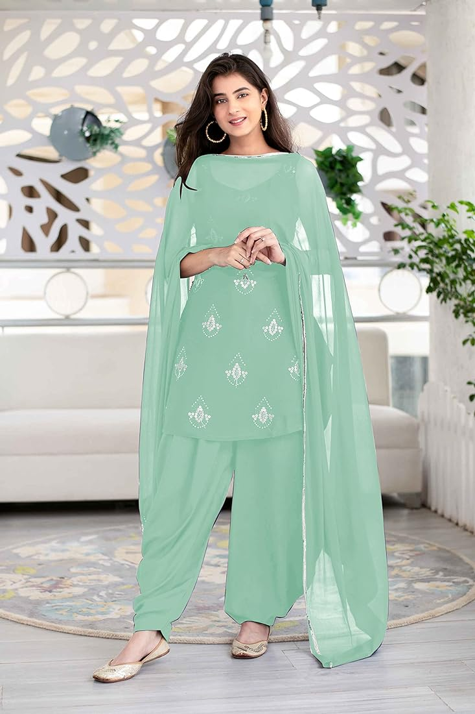
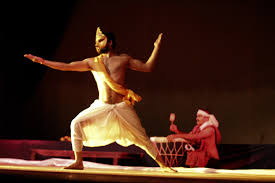
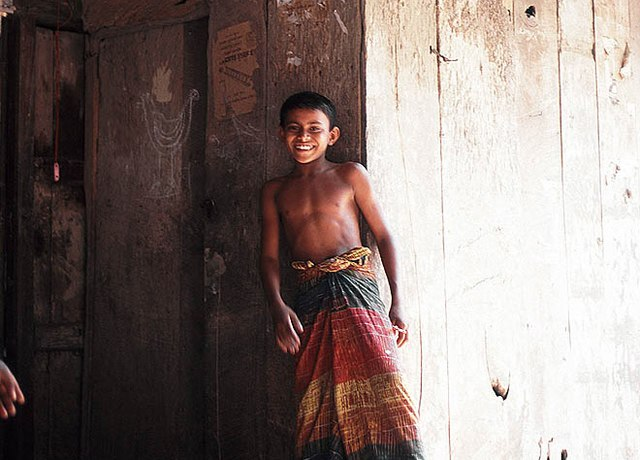

Shalwar kameez
Shalwar kameez is a traditional combination dress worn by men and women in South Asia, and Central Asia. Shalwars are trousers which are atypically wide at the waist but which narrow to a cuffed bottom. They are held up by a drawstring or elastic belt, which causes them to become pleated around the waist
dhoti
The dhoti, also known as veshti, mardani, dhotar, jaiñboh, or panchey, is a piece of cloth arranged around the legs to resemble trousers. It is most popular in India and Nepal. The dhoti is a lower garment forming part of ethnic wear for men in the Indian subcontinent.
Lungi
The Panche or Lungi is a long piece of fabric wrapped around the waist which is one of the most popular among the traditional dresses of India. The Lungi is mainly made from cotton and on occasion, it can be sewn to mimic a tube shape. The garment is worn by both men and women, mostly in informal occasions and it is very colorful and flowery. In the above picture, Punjabi bhangra dancers dance to the beats of Punjabi music wearing a lungi as the lower garment.